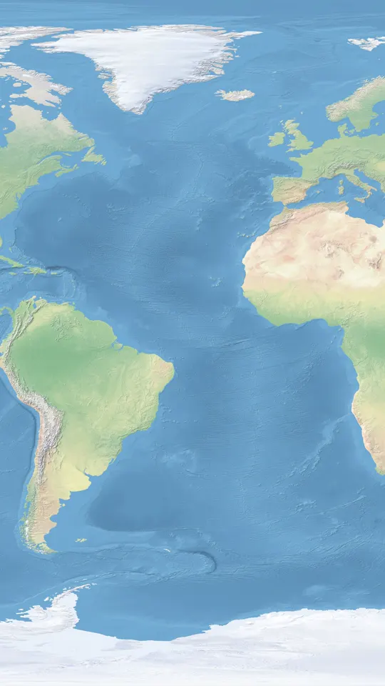
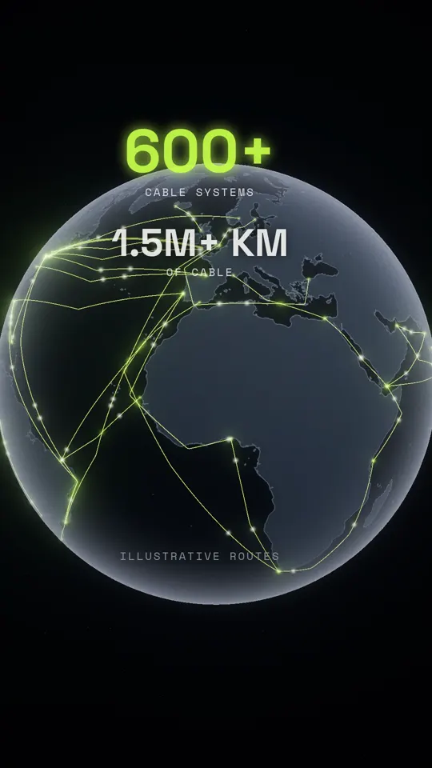

The internet isn't in the sky. It's on the ocean floor.
More than 99% of international data travels through cables about as thick as a garden hose. Here's the story, the numbers, what's inside one, and prompts to make your own cinematic explainer.
The story
Sky vs sea floor. Ask people where the internet lives and many point up, to satellites. But satellites carry only a very small share of international traffic. The real backbone lies on the seabed.
Inside a cable. A modern submarine cable is roughly garden-hose thick. At its heart are glass fibres about as thin as a human hair, carrying data as pulses of light. Some lie kilometres below the surface, in total darkness.
1858: the copper failure. The first transatlantic telegraph cable linked Ireland and Newfoundland in August 1858. Messages crawled across it, and within a month it went silent. But the idea survived, and lasting cables followed in 1866.
1988: light crosses the Atlantic. On 14 December 1988, TAT-8 entered service as the first transatlantic fibre-optic cable, linking the US, UK and France. After it, the balance of international traffic moved rapidly from satellite to cable.
Today. Hundreds of systems criss-cross the oceans, stretching well over a million kilometres. Not a cloud. A cable.
How this was made
The short version of how a Vynema film comes together, minus the secret sauce.
Idea and twistIt starts with a misconception worth breaking: most people picture the internet in the sky, but it lives on the ocean floor.
Script and pacingShort, spoken lines with deliberate pauses, plus one moment of real silence when the 1858 cable fails. Every number is checked against a public source first.
AI voiceThe narration is a built-in synthetic AI voice, not a clone of any real person.
Visuals built entirely in codeEvery frame is generated by code: no stock footage, no AI video generator, no camera. The globe, the seafloor, the cable cutaway and the light inside a fibre are all built and lit frame by frame.
Sound design from scratchOcean rumble, sonar-like pings, telegraph Morse and the swell at the end are all built from raw waveforms and timed to the picture.
Final mix and QAVoice, music and effects are balanced and mastered to streaming loudness. Then we check every frame for glitches, black frames and text placement, and a human watches and listens before anything is posted.
Behind the scenes: raw vs final

Raw · a public-domain relief map

Final · the glowing cable network
By the numbers
52.0 s
running time
1,557
frames, each one generated at 30 fps
47
cables drawn: 45 illustrative routes plus the 1858 and 1988 cables
9,000
drifting particles of marine snow
3,000
stars behind the globe
22 + 8
steel wires and glass fibres in the cutaway
25
sound layers built from scratch
1
real Morse message, cut off as the 1858 cable fails
0
stock clips or AI-generated video
Follow @vynemastudio, more behind-the-scenes coming.
Key numbers
99%+
of international data exchange travels via submarine cables.
A typical deep-sea design, from outside in. Designs vary; shallow-water cables add heavy steel armour against anchors and fishing gear.
Polyethylene sheath: the outer insulating jacket.
Steel strength wires: tensile strength for laying and recovery.
Copper conductor: carries electrical power to the repeaters along the route.
Insulation / filler: keeps power and water where they belong.
Steel tube: protects the fibres from pressure and water.
Optical fibres: hair-thin glass strands that carry the light.
The cutaway in our film is illustrative, not an engineering drawing of any specific cable.
How a light pulse travels
1. Encode. At the landing station, lasers turn data into rapid flashes of light, often at many wavelengths (colours) at once in the same fibre.
2. Guide. The fibre's glass core is wrapped in glass with a lower refractive index, so light that hits the boundary at a shallow angle reflects back in (total internal reflection) and zig-zags along the core.
3. Boost. Light fades over distance, so powered repeaters spaced along the cable amplify the signal on its way across the ocean.
4. Decode. On the far shore, detectors turn the light back into data, and it joins land networks to reach your phone.
Make your own cinematic explainer
Starter prompts for any AI assistant. Swap in your own topic and keep facts sourced.
1 · Concept & storyboard
I'm making a 45–60 second vertical (9:16) cinematic explainer about [TOPIC]. Give me 3 concept options, each with a one-line hook that challenges a common misconception, a story arc (hook → reveal → history beat → today → payoff line), and a 10–14 panel storyboard with picture + on-screen text per panel.
2 · Cinematic narration script
Write a 100–120 word voiceover for a 50-second explainer about [TOPIC]. Short, punchy sentences. Open with a surprising contradiction, include one moment of failure and one comeback, end with a three-beat closing line. Only use facts I can source; list a public source URL for every number.
3 · Shot list with scale changes
Turn this script into a shot list with timecodes. Make the camera travel across scales: orbit → atmosphere → surface → deep → macro cutaway → inside the smallest part → pull back to a global view. For each shot give camera move, duration, lighting mood and transition into the next.
4 · Glowing globe look
Describe a visual style for a vertical (9:16) shot of a dark charcoal globe built from public-domain land outlines, with thin glowing lime (#C5FF4A) arcs between coastal points, small light pulses travelling along each arc, a slow rotation and a soft glow. Give me lighting, colour, camera and motion notes I can hand to any designer or tool.
5 · Sound-design brief
Write a sound-design brief for a 50-second ocean-and-technology explainer: an ambient bed per section (space hum, underwater rumble, deep silence, electric crackle for history, rising synth for today), list of spot effects synced to on-screen moments, one deliberate silence for impact, and loudness targets for social video.
6 · Captions & hooks
Give me 10 first-line hooks (under 8 words) for a reel about [TOPIC], then an Instagram caption: hook, a comment-keyword CTA, 3–5 short sourced lines, a disclosure line, and 10 hashtags. Then a YouTube Shorts title under 70 characters.
7 · Fact-check pass
Here is my script: [PASTE]. For every factual claim, tell me whether it's supported by a primary public source, give the URL and the exact quote, and flag anything that should be softened or labelled "illustrative".